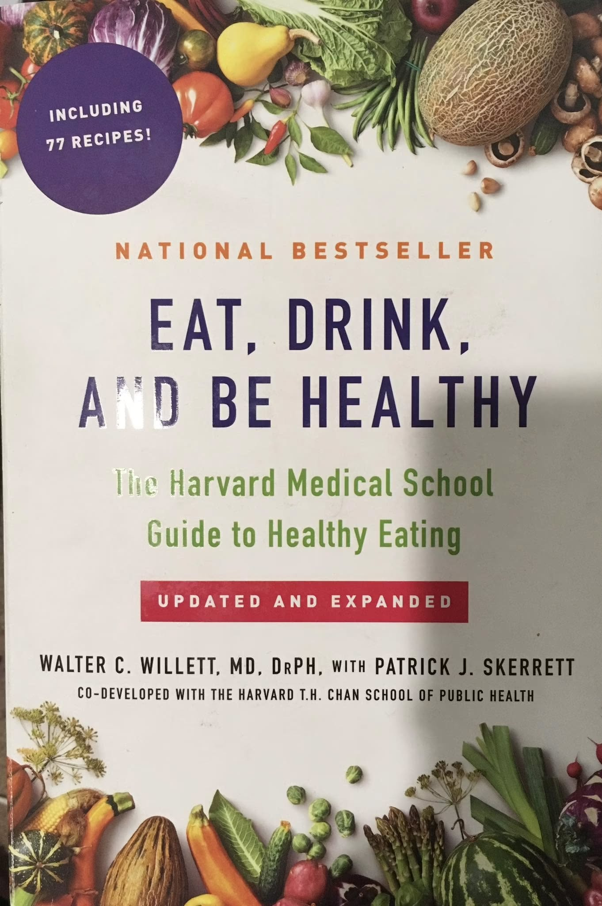
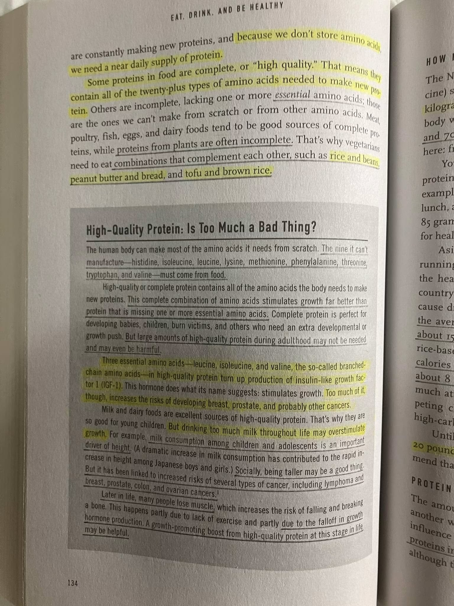

(no text — see the shared post below)
Is whey protein powder a health food?
Harvard professor Walter Willett shares my concern that processed whey protein powders may increase the risk for cancer (and other diseases) in the long term by raising levels of insulin/IGF1/mTOR.
This insulin/IGF1/mTOR pathway also plays a role in the long-term pathogenesis of heart disease, as well as other major diseases including the aging process itself.
There are studies that show whey protein has some health benefits in the shorter term, including immune-boosting and possible anti-cancer properties. But there is virtually no data on its long term health effects in humans. It has not yet been properly studied in large long-running prospective cohort studies, like the type that Willett has spent his entire career conducting. For longevity, it is the long term that really matters.
Whey protein powder has an extremely high insulin index. Calorie for calorie, it spikes insulin levels more than even pure glucose or white bread (see comments for chart):
Paper · Nutr Metab (Lond) · 2012The insulinogenic effect of whey protein is partially mediated by a direct effect of amino acids and GIP on β-cells.Conclusion: Compared with white wheat bread meal, whey causes an increase of postprandial insulin, plasma amino acids, GIP and GLP-1 responses. The in vitro data suggest that whey protein exerts its insulinogenic effect by preferential elevation of the plasma concentrations of certain amino acids, GIP and GLP-1.pubmed.ncbi.nlm.nih.gov
 PEScienceWhey Protein Insulin Spikes and How to Avoid ThemWhey protein can cause significant insulin spikes—sometimes greater than carbs. Learn how whey affects insulin, ketosis, and why whey-casein blends are the smarter choice.pescience.com
PEScienceWhey Protein Insulin Spikes and How to Avoid ThemWhey protein can cause significant insulin spikes—sometimes greater than carbs. Learn how whey affects insulin, ketosis, and why whey-casein blends are the smarter choice.pescience.com
↪ Whey protein raised insulin about twice as much as glucose or white bread per calorie
↪ Beef and whey raise insulin more than pasta, oatmeal or glucose: use the insulin index
There are very few foods that raise insulin levels more than processed whey protein, when comparing calorie for calorie. It is one of the most insulinogenic food that we know of.
This is why bodybuilders love it. Insulin, IGF1, and mTOR directly promote growth. The problem is that they also promote growth of cancer cells as we get older, and they accelerate the long-term aging process in animal models. The insulin/IGF1/mTOR pathway plays a major role in the pathogenesis of heart disease and cancer, and multiple other diseases.
To understand this better, I suggest googling "igf1 cancer" and "igf1 aging". You can also repeat the search by using insulin or mtor in place of igf1.
Whey protein is so powerful at stimulating growth pathways in humans like mTOR and insulin/IGF1 that randomized controlled trials show that it can be used in place of growth hormone to treat children with stunted growth.
Supplementing 12g of whey protein for 6 months added almost a centimeter to children's height compared to controls. That's how massively powerful this stuff really is at stimulating growth through the insulin/IGF1/mTOR pathway:
Paper · J Pediatr · 2014Effect of a nutritional supplement on growth in short and lean prepubertal children: a prospective, randomized, double-blind, placebo-controlled study.Conclusion: Nutritional intervention with the formula was found to be a feasible, effective, and safe approach for promoting the physical growth of short and lean prepubertal children.pubmed.ncbi.nlm.nih.gov
nutraceuticalbusinessreview.comHigh-protein shake helps children growNutritional Growth Solutions eyes European kids’ growthnutraceuticalbusinessreview.com
These mTOR and insulin/IGF1 growth pathways shorten lifespan in virtually every animal species tested. They have short term benefits on reproductive fitness, but they shorten lifespan in the long term. Inhibiting this insulin/IGF1/mTOR pathway with genetic interventions, calorie restriction, and drugs like rapamycin consistently extends lifespan in animal models, including mammals.
The best causal data that we have on this in humans comes from a rare genetic disease called Laron syndrome. People with this disease have a genetic mutation that really only affects one thing, IGF1. As a consequence, they have very low levels of IGF1 for their entire lives, and low basal levels of mTOR. The end result is that they almost never develop cancer or diabetes. In fact, there has never been a documented case of someone with Laron syndrome dying of cancer. (There was one possible case that has been disputed.) They seem to be almost immune to terminal cancer. Their rates of heart disease and Alzheimer’s are also very low. This causally proves that the IGF1/mTOR pathway is playing a major role in these diseases over the course of a person’s life:
 NBC NewsLittle People of Ecuador Could Hold Key to Cancer CureThey have Laron Syndrome, a form of dwarfism that protects them from cancer and diabetes.nbcnews.com
Paper · Nature · 2024Could a rare mutation that causes dwarfism also slow ageing?nature.com
NBC NewsLittle People of Ecuador Could Hold Key to Cancer CureThey have Laron Syndrome, a form of dwarfism that protects them from cancer and diabetes.nbcnews.com
Paper · Nature · 2024Could a rare mutation that causes dwarfism also slow ageing?nature.com
↪ Laron syndrome, with lifelong low IGF-1 and mTOR, shows low cancer, diabetes and CVD risk
Most IGF1 is produced in the liver. The liver converts growth hormone to IGF1 in the presence of insulin. (People with Laron syndrome have a mutation that blocks this conversion.) In the absence of insulin, the liver produces little to no IGF1. For this reason, any food that strongly raises insulin also raises IGF1. Increases in IGF1 then in turn raise mTOR. This is one of the main reasons why too much insulin is bad for you.
The amino acids in whey also directly stimulate the production of IGF1 and mTOR independent of insulin, particularly the BCAA’s. Other compounds in whey may also directly stimulate IGF1 and mTOR independent of insulin (this is still an active area of research).
Nature designed whey to make baby mammals grow as fast as possible. That’s why there is so much of it in breast milk. Nature specifically engineered whey to raise insulin/IGF1/mTOR.
We know that there is often a tradeoff between optimizing reproductive fitness in the short term and optimizing longevity in the long term. This is the classic theory of antagonistic pleiotropy. Most of the shorter term studies on whey show that it boosts health aspects related to reproductive fitness, such as immunity, strength, fertility, etc.
I don’t want to give the impression that there is a proven causal link between whey protein and cancer in humans. That is certainly not true. The problem is absence of long term data, which makes it impossible to know.
What is lacking is good quality data from long term prospective cohort studies establishing the health effects of whey protein in the long term, e.g. 30+ years. We have that kind of long term prospective data on many other foods, but not whey.
It is a big red flag when the most distinguished nutritional epidemiologist in the world is seriously worried about something like this. Willett has published over 2000 peer-reviewed journal articles, and was the second most academically-cite journal paper author on all of pubmed. Not just in nutrition, but in all of biology and medicine.
There is a real possibility that this processed whey protein craze may be causing more harm than good in the long term. People should at least be aware of this.
From p149 of his 2017 book:
"Fast Fact: Be Wary of Protein Supplements-
Athletes, bodybuilders, and others take protein supplements, such as whey protein, to build muscle.
Taking protein supplements without exercising has only a small effect on adding muscle and is no replacement for exercise. It's an expensive strategy that isn't any better than a high-protein diet. In addition, trying to rev up muscle growth with protein supplements might be accompanied by a revving up of cancer cells that lurk around for years and don't show up until far down the road (see "High Quality Protein: Is Too Much A Bad Thing?" on page 134)."
From page 134:
"Three essential amino acids- leucine, isoleucine, and valine, the so-called branched-chain amino acids- in high-quality protein turn up production of insulin-like growth factor (IGF-1). This hormone does what its name suggests: stimulates growth. Too much of it, though, increases the risks of developing breast, prostate, and probably other cancers.
Milk and dairy foods are excellent sources of high-quality protein. That's why they are so good for young children. But drinking too much milk throughout life may overstimulate growth."
#proteinHD #wheyHD #igf1HD #cancerHD #proteinpowdersHD #willettHD #harvardHD #bcaaHD #milkHD #dairyHD #muscleHD #resistancetrainingHD #laronHD

